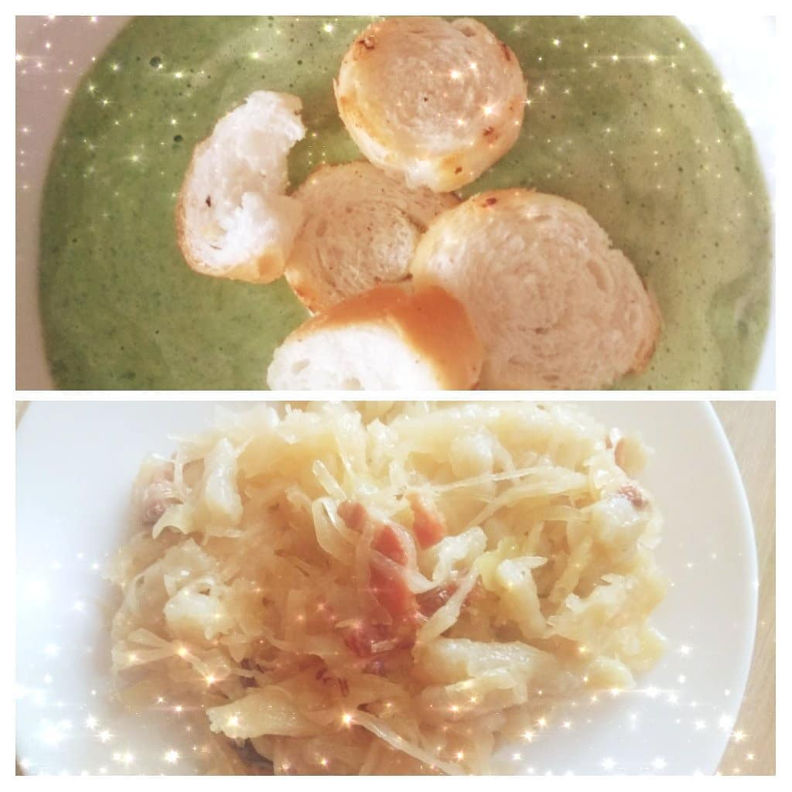

Strapačky s kapustou podľa @julia_zoja_hana — Normy Jedál
Dnes máme na obed špenátovú polievku a strapačky s kapustou.Polievka sa už celá zjedla a aj strapackou je tam už len trochu ešte sa naje Hana a moja mamina a budú zjedenie☺️☺️☺️☺️#mojejedlo #nasobed #nasejedlo #slovakia #slovenskamama #slovensko #somslovenka #sommama #maminka #mamablogg #mama #mamablog #mamablogger #slovakmam #slovakmother #slovenskamama #strapackyskapustou #spenatovapolievka #oravskamamina #orava #namestovo #ju_zo_ha